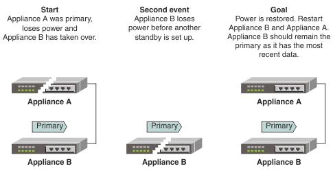

Bring back primary and standby nodes after both nodes fail
In this scenario, the primary node has failed and the standby node has taken over as the new primary node. Before a new backup can be brought up, the new primary node fails. You need to bring back both nodes.
Use the following information to understand the steps that are required to bring back Appliance A and Appliance B after both appliances fail. The original primary appliance (Appliance A) is brought back as the standby. The original standby (Appliance B) is brought back as the primary because this node has the most recent data. The content of the store and the configuration of Appliance B is preserved and Appliance A and B require a restart.

You can configure appliances for high availability by using the Amlen WebUI, or by using the command line. For more information about using the Amlen WebUI to configure appliances for high availability, see Bring back primary and standby nodes after both nodes fail by using the GUI. For more information about using the command line to configure appliances for high availability, see Bring back primary and standby nodes after both nodes fail by using the command line.